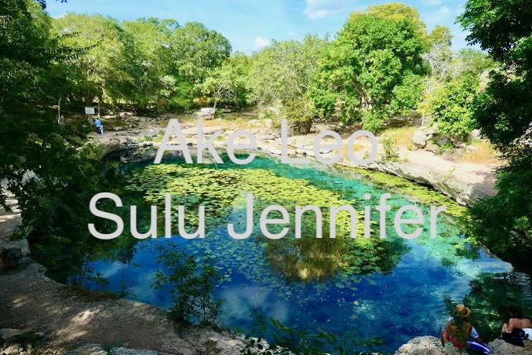
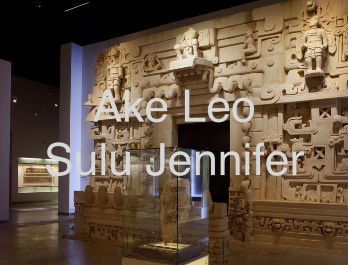
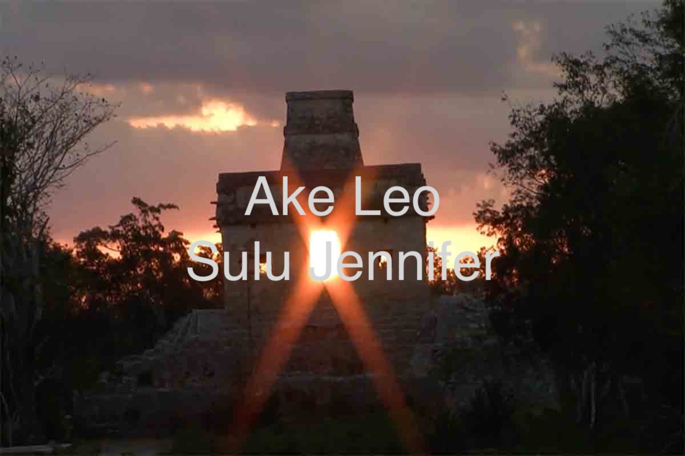

Dzibilchaltún
Dzibilchaltún significa en lengua maya "Lugar donde hay escritura en las piedras", en alusión a las numerosas lápidas conmemorativas encontradas en el sitio, llamadas también estelas.
Según los expertos, hubo asentamientos desde el año 500 a.C., y perduró hasta la conquista española alrededor del año 1540.
Por su cercanía con la costa, su economía aprovechó los productos marinos y agrícolas, principalmente la producción de sal y el cultivo de maíz.
Dzibilchaltún reúne una ciudad prehispánica, un parque ecoarqueológico y el Museo del Pueblo Maya, donde se conservan estelas, esculturas, armas españolas y una capilla franciscana del siglo XVI.
El Templo de las Siete Muñecas
El templo recibe su nombre debido a que en las excavaciones arqueológicas se encontraron bajo el piso del templo, siete figurillas de cerámica con forma humana. Durante los equinoccios de primavera y otoño, ocurre un fenómeno de luz que consiste en la alineación del sol con una de sus puertas, resultado de un amplio conocimiento astronómico de la antigua civilización maya
Cenote Xlacah
Su nombre en maya significa "pueblo viejo", fue de gran importancia en la antigua civilización maya debido a su función como fuente de abastecimiento de agua. En su interior se han encontrado vasijas antiguas y objetos rituales, las aguas cristalinas del cenote están adornadas con lirios flotando en la superficie.
Museo del Pueblo Maya
Tiene en exhibición aproximadamente 700 piezas arqueológicas que resumen tres mil años de desarrollo de la cultura maya, desde la época prehispánica hasta la actualidad. El museo consta de cuatro salas de exhibición en las que podemos admirar estelas mayas, esculturas prehispánicas, elementos de cerámica y una gran diversidad de piezas halladas en excavaciones.

Museo del Pueblo Maya
